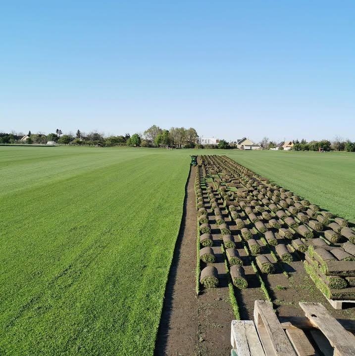
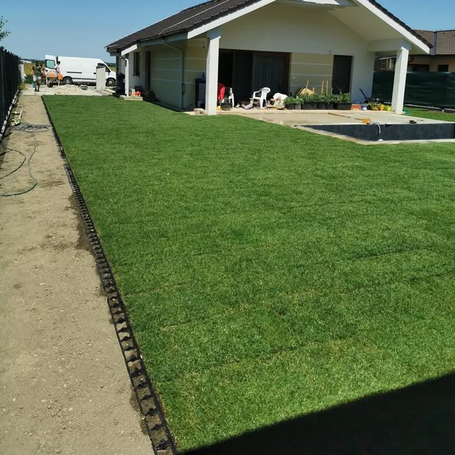
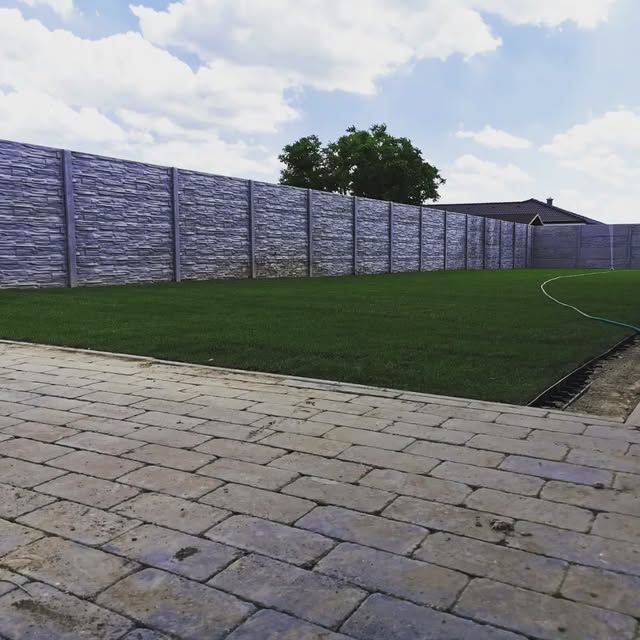
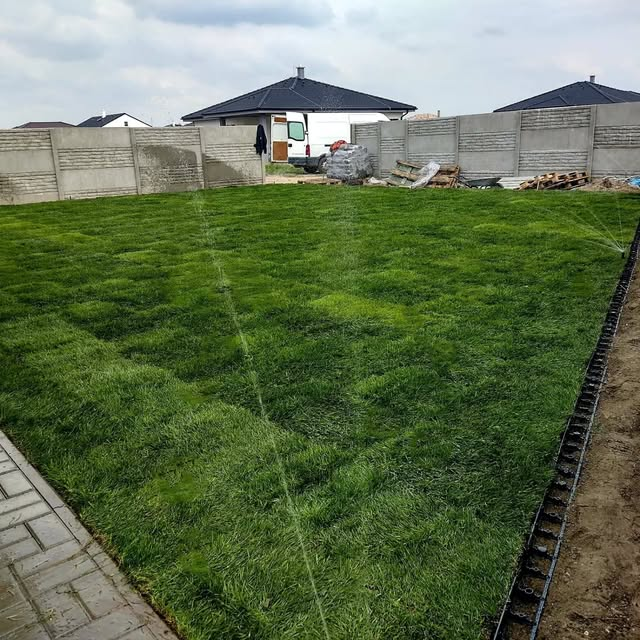
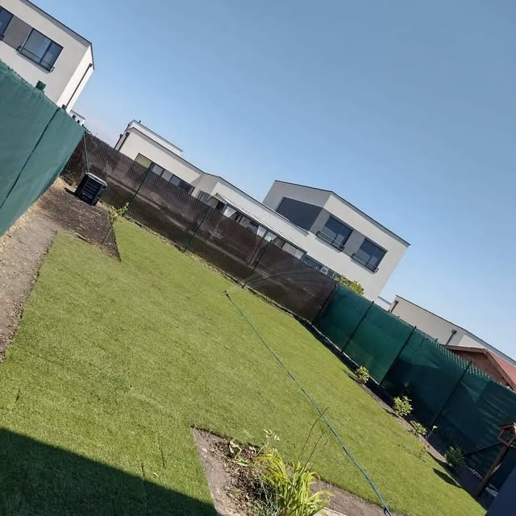
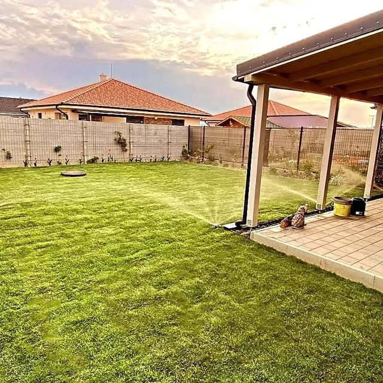
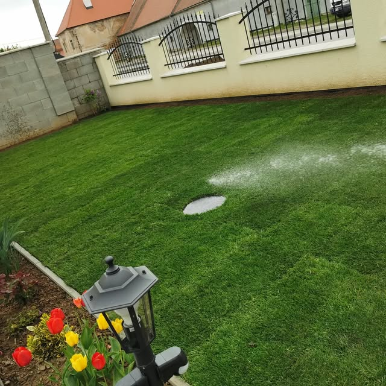
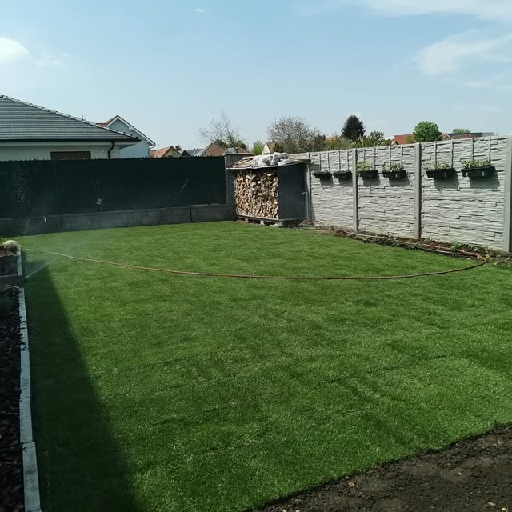

Produkcia a predaj rolovanej trávy
Predpestovaný, 14–18 mesiacov ošetrovaný športovo-okrasný trávny koberec s hustým koreňovým systémom. Zrezávaný špeciálnym strojom tesne pred odberom v Reci.
Pestujeme, režeme a odborne ukladáme prvotriedne predpestované trávnikové koberce aklimatizované na slnečné a teplé podmienky juhozápadného Slovenska. Od odburinenia a frézovania pôdy až po prvé zavlaženie.
Skúseností od r. 2013
Od zrezania po pokládku
Hustý bezburinový drn
Vlastná doprava roliek

Odber priamo z poľa alebo dovoz s pokládkou na kľúč
Zabezpečujeme celý proces – či už hľadáte len čerstvo narezané trávne rolky na svojpomocnú pokládku, alebo kompletnú realizáciu záhrady na kľúč.
Predpestovaný, 14–18 mesiacov ošetrovaný športovo-okrasný trávny koberec s hustým koreňovým systémom. Zrezávaný špeciálnym strojom tesne pred odberom v Reci.
Kompletné odburinenie, hĺbkové frézovanie zakladačom trávnikov, odstránenie kameňov, dovoz kvalitného substrátu, laserové vyrovnanie a zvalcovanie lôžka.
Precízne ukladanie trávnych roliek na väzbu bez medzier, tvarové orezanie okolo obrubníkov, chodníkov a záhonov, aplikácia štartovacieho hnojiva a zavlaženie.
Návrh a inštalácia podzemných výsuvných postrekovačov a kvapkovej závlahy pre rovnomerné zavlažovanie novozaloženého trávnika bez námahy.
Profesionálna jarná regenerácia po zime: vertikutácia (prevzdušnenie), vyčesanie trávnej plsti, pieskovanie, dosev a aplikácia sezónnych hnojív.
Rýchla preprava čerstvo narezaných trávnych roliek na paletách a sypkých záhradných materiálov priamo na váš pozemok v okresoch Senec, Bratislava, Galanta a Dunajská Streda.

Oproti klasickému výsevu, kde čakáte mesiace a bojujete s burinou či vymývaním semien dažďom, náš predpestovaný trávnik prináša okamžitý vizuálny aj funkčný efekt.
Dodržiavame prísnu agrotechnickú postupnosť, aby sa trávnikový koberec zakorenil rýchlo a rovnomerne.
Zameranie plochy, odstránenie starej mačiny, frézovanie pôdy, zapracovanie kremičitého piesku/substrátu a dôkladné uvalcovanie.
Trávnik režeme na našej plantáži v Reci v deň pokládky, aby korene nestratili vitalitu a vlhkosť počas prepravy.
Ukladanie tesne k sebe v tehlovom (šachovnicovom) vzore, presné obrezanie okrajov pri dlažbe a zavlažovacích hlaviciach.
Pritlačenie korienkov k podložiu valcom, aplikácia štartovacieho hnojiva a výdatná zálievka s inštruktážou pre majiteľa.
Zvoľte rozlohu vašej záhrady, mieru prípravy terénu a doplnkové služby. Výpočet jedným klikom prenesiete do nezáväzného dopytu.
Presnú cenovú ponuku na m² a dopravu vám vypracuje konateľ František Gyurcsi podľa aktuálnej sezóny a stavu podložia.
Autentické zábery zo zberu trávnych kobercov v Reci a pokládok v rodinných domoch v okolí Senca a Bratislavy.






Všetko, čo potrebujete vedieť pred objednávkou a pokládkou trávneho koberca.
Zavolajte nám alebo nám pošlite rozmery vášho pozemku. Konateľ František Gyurcsi vám osobne poradí a pripraví ponuku na mieru.
Reca 54 (prevádzka Reca 587), 925 26 Reca, okres Senec